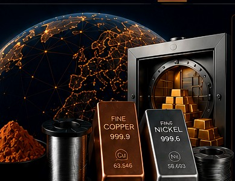

Ultrafine Copper Powder.
Evidence-led asset records.
A proposed industrial-material program with structured records for technical specifications, source documents, lot identifiers and future verification workflows.
PROGRAM PROFILE / DEMO DATA
Document the material.
Verify before publishing.
This page is a working visual prototype for a future copper-powder record. It does not establish current inventory, ownership, custody, insurance, valuation or reserves.

DIGITAL ASSET REGISTRY / SAMPLE RECORD
Material overview
ProgramUltrafine Copper Powder
ElementCopper (Cu)
Reported sample purity99.9999%
Evidence sourceSupplied IGAS sample analysis
Batch / container IDPending owner verification
Net weight / packagingNot supplied for current inventory
Custody / insuranceNot confirmed
Valuation / reserve statusNot provided